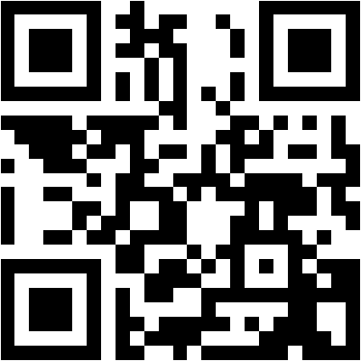
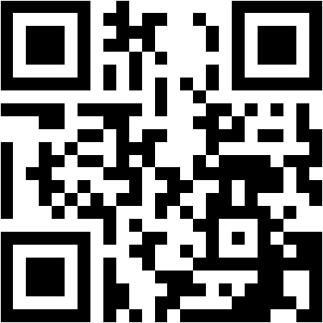

iPhone kameranızı aşağıdaki ilgili QR koda tutarak tek tıkla bağlanabilirsiniz.

(Kamerayı okutunca "Ayrıntıları Göster -> Web sitesini ziyaret et" deyin ve kameraya izin verin).

(Kadeh bittiğinde titreyen ve masaları gösteren ana garson arayüzü).